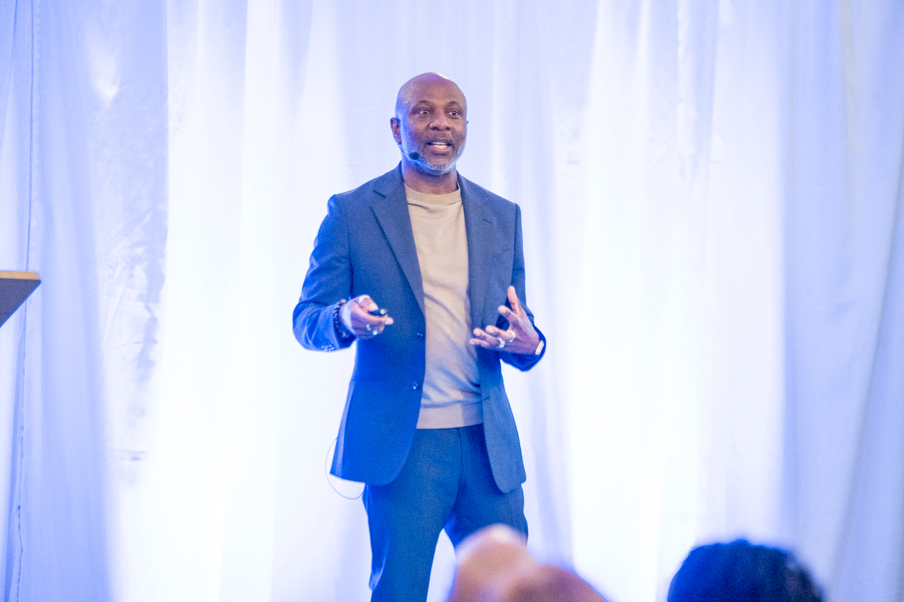
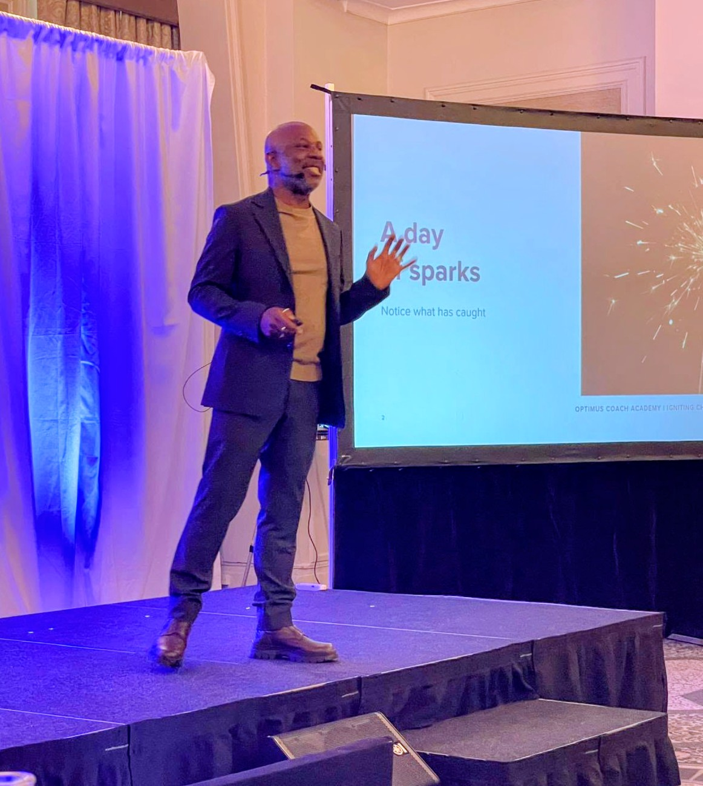
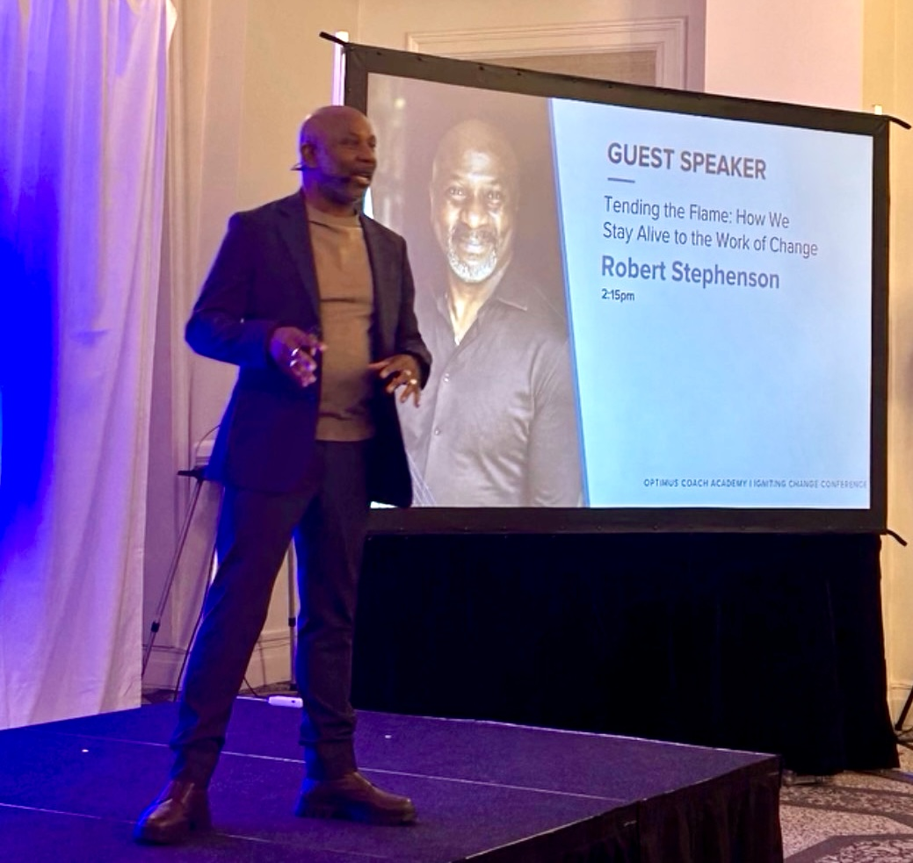

Speaking · Robert Stephenson
Who do we become when something needs to change?
Keynotes and reflective sessions exploring the stories we carry, the characters we become and the possibilities we haven’t yet considered.
Book a Conversation →
Speaking engagements include ACTO, WBECS, Optimus Coach Academy, Animas Centre for Coaching and Jenny Bird Executives.
A conversation that keeps unfolding.
A room can hold more than one story. About who we are. What is expected of us. What change requires. And what might happen if we tried something different.
I bring storytelling, humour, reflection and challenge together to help people explore those stories. My background in physical theatre and coaching shapes the experience: there is room for movement, playfulness, a different perspective and a question that stays with you afterwards.
For leadership gatherings, conferences, organisations and coaching communities, we begin with the people in your room and what matters to them.
Perhaps your leaders are navigating a transition, your team is caught in a familiar story, or your coaching community wants to reconnect with the work. These sessions create space to notice what is happening, explore another perspective and choose something to try afterwards.
Explore the speaking themes ↓Selected past engagements
These conversations have a history.
Story, identity and the way we make room for one another have been threads in my work for years. They have taken me into conference keynotes, practitioner gatherings and conversations about the future of coaching.
2026 · Optimus Coach Academy · Igniting Change
Tending the Flame: How We Stay Alive to the Work of Change
A keynote exploring how we stay connected to the energy and possibility that bring us to the work of change.
2022 · WBECS Full Summit
Embodied Narrative: Our Bodies and Their Stories
An experiential session bringing the body into narrative coaching through noticing, movement and reflection.
2021 · Association of Coach Training Organizations (ACTO)
Driving the Narrative: Creating New Stories to Promote Diversity and Inclusion in Coaching
The opening keynote at ACTO’s virtual conference. An exploration of representation, the stories that shape who feels able to participate, and how we create spaces where people feel welcomed and valued.
View the original conference listing ↗Other engagements include the Hero’s Journey for Optimus Coach Academy and Animas Centre for Coaching, and narrative coaching for Jenny Bird Executives.
Tending the Flame, in the room.


Four conversations to begin with
Speaking themes
01 · Aliveness and change
Tending the Flame
How we stay alive to the work of change
How do we ignite change in ourselves and others without losing the energy, passion and possibility that brought us to this work?
We explore what keeps us connected to our work, what can crowd out that connection, and how to tend what matters beyond the moment of inspiration.
Through stories, reflection and the invitation to notice, open and tend, people consider what they want to carry forward and one small step they could take.
Delivered as a keynote at Optimus Coach Academy’s Igniting Change conference.
02 · Narrative and identity
Narrative, Character and Identity
Who are you being inside the story?
The situation may be familiar. The character we become within it is worth another look.
This session explores how stories, beliefs and expectations shape who we are being, and who we are leaving out. Drawing on narrative coaching and physical theatre, we try on other perspectives and notice what changes in our voice, energy and sense of possibility.
For leaders, it opens questions about how we show up. For coaches, it offers ways to listen for the story and the openings within it.
Delivered for Jenny Bird Executives.
03 · Possibility and transition
The Hero’s Journey
Exploring our relationship with change
A call to something different. Reasons to stay where we are. A threshold we have not yet crossed.
The Hero’s Journey offers a metaphor for exploring uncertainty, the people who walk with us and what we discover along the way. We use it to ask what our current situation might be inviting, and which paths we want to explore.
For coaching communities, this includes our own development as coaches and the journeys we accompany others on.
Delivered for Optimus Coach Academy and Animas Centre for Coaching.
04 · Body and story
Embodied Narratives
Our bodies and their stories
What might we discover if we listened to more than the words?
An experiential session exploring the relationship between our physical experience and the stories we tell. Drawing on my training in Physical Intelligence, narrative coaching and my background in physical theatre, we use movement and guided reflection to notice what is happening in the body and become curious about the stories connected to it.
For coaches and practitioner communities interested in deepening their listening and exploring ways of working beyond words. The original session included a coaching demonstration and reflection on bringing the work into practice.
Presented at the WBECS Full Summit, 2022.
From the room · Tending the Flame
“The real shift happens when we move from what we SHOULD do to what we WANT to explore. It’s a reminder I’m taking into my own coaching, and my business too.”Tanzyla Tareen · Reflection shared on LinkedIn following the talk
What might become possible in your room?
There may be laughter, a moment of recognition or a question that unsettles a familiar answer. There is space to reflect on your own experience, rather than simply listen to mine.
We can explore what is missing. What we really want. Who we are being in relation to the challenge. And the different paths we might walk before committing to our next step.
The format and emphasis can be shaped around your audience and event. Our first conversation is about who is coming, what they are navigating and what you would like to make possible for them.
“Robert’s fantastic session in particular prompted me to think about where I am now in my coaching journey.”Merrisha Gordon · Reflection shared on LinkedIn following Tending the Flame
Conversations beyond the stage
Hear the thinking in conversation.
Some of this work happens with an audience. Some of it unfolds with another person, following a question together. These are a few ways to get a feel for how I think and listen.
Guest conversation · Coaches Rising · Episode 83 · 2021
Cross-disciplinary Approaches in Narrative Coaching
With Joel Monk, on the stories we live inside, what happens when they break down, and listening beyond words.
Listen on Coaches Rising ↗Guest conversation · The Transformative Leader Podcast · Episode 160
Mastering the Craft of Coaching
With Amir Ghannad, exploring the art of listening, the difference between coaching and other forms of support, and how we help the people who look to us for guidance.
Listen to the interview ↗A conversation I hosted · Coaching Uncaged · 2020
Exploring Narrative Coaching and the Power of Stories
My conversation with Dr David Drake, founder of Narrative Coaching, about story, silence, serious play and the space we create for someone else’s discovery.
Listen to the conversation ↗Speaking enquiries
Bring the conversation into your room.
If you are bringing people together around leadership, identity or change, let’s explore what we could create together.
Book a Conversation →A 20-minute conversation about your event, your audience and whether we are a good fit.
It helps to know your proposed date, location or online format, who will be in the room and what you hope they will take away. You do not need to have everything worked out before getting in touch.
Prefer email? Enquire about speaking